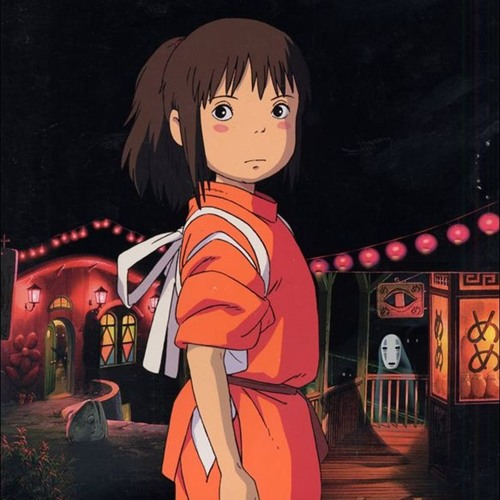

The Magic of Hisaishi's Music
Joe Hisaishi composed the music for all 11 of Miyazaki’s films, crafting symphonic scores whose pauses and spaces create tension and wonder—making you believe in a grinning Catbus or a talking heron.
Joe Hisaishi’s soaring violin and nostalgic piano themes give voice to Miyazaki’s characters, making audiences feel deeply connected to them. His music, often minimalist yet heartfelt, balances Ghibli’s heavier themes—like nature’s fragility or life after death—with warmth and comfort, offering moments of intimacy and relief amid the stories’ challenges.
“In my life, I just want to make music that can make people happy and escape” – Joe Hisaishi
Joe Hisaishi’s score for Spirited Away is a haunting masterpiece, with themes like “One Summer’s Day” reflecting Chihiro’s growth. The music confronts greed in No-Face’s rampage, evokes loneliness during the train ride, and explores memory in “Reprise.” Beyond enhancing Miyazaki’s storytelling, the soundtrack remains beloved.